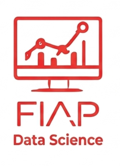

Data Science, ou ciência de dados, é a disciplina que transforma grandes volumes de informações em conhecimento útil. Ela combina estatística, programação e análise de dados para apoiar decisões estratégicas.
O processo começa com a coleta e organização dos dados, que podem vir de diversas fontes, como redes sociais, sensores ou sistemas corporativos. Essa etapa é crucial para garantir a qualidade das análises.
Em seguida, entram as técnicas de modelagem e aprendizado de máquina. Com elas, é possível identificar padrões, prever tendências e gerar insights que impactam diretamente os negócios.
Outro aspecto importante é a visualização de dados. Gráficos e dashboards tornam as informações mais acessíveis, permitindo que gestores compreendam rapidamente os resultados.
Por fim, Data Science é uma área altamente valorizada, já que empresas de todos os setores buscam profissionais capazes de transformar dados em vantagem competitiva.
Atuar como cientista, engenheiro ou analista de dados.
Aprender modelagem de dados, SQL, Python e ferramentas de visualização.
Trabalhar com Cloud, NoSQL, Data Warehouse, Data Lake e Big Data.
Aplicar Machine Learning, Deep Learning e Data Mining.
Desenvolver comunicação clara para apresentar insights a públicos não técnicos.
|Curso anterior| |Página principal| |Próximo curso|